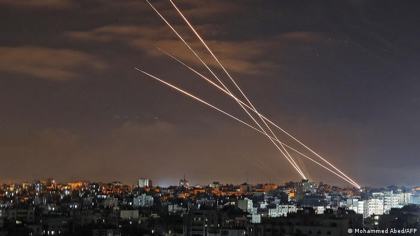
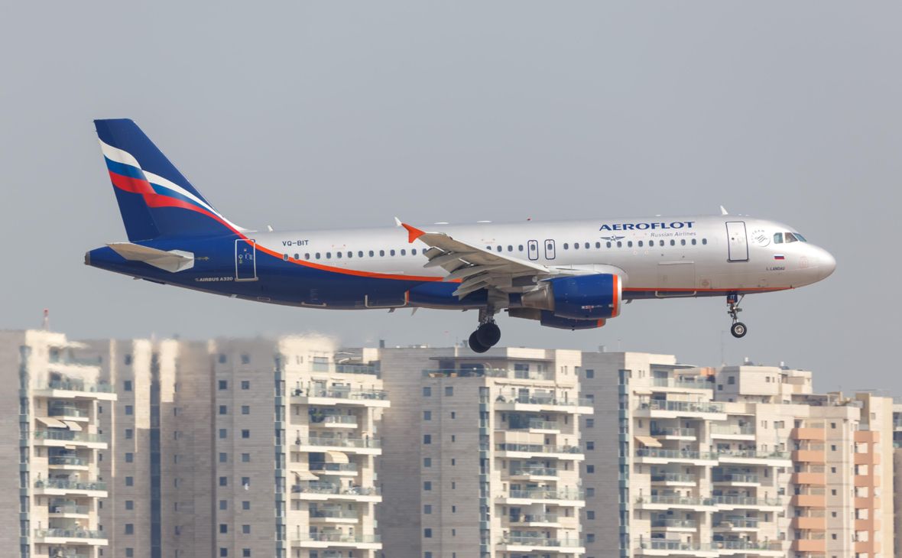
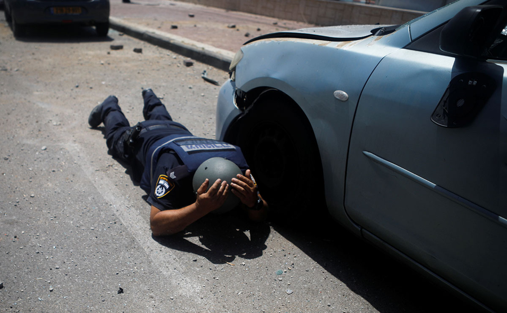
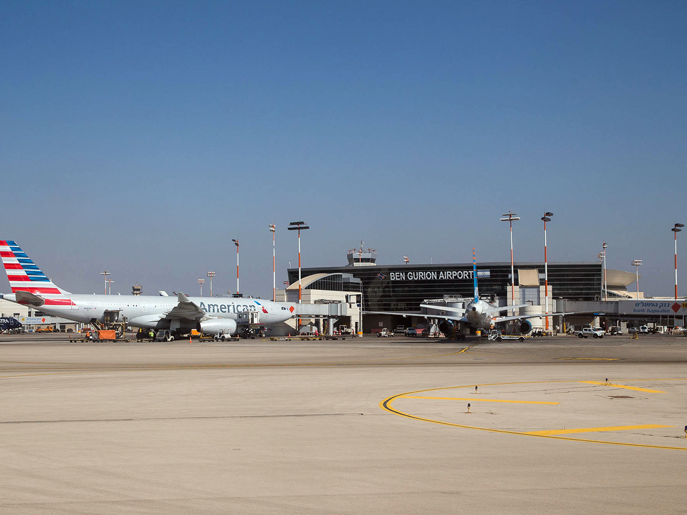

Израиль стал мировым лидером по борьбе с коронавирусом благодаря вакцинации
19 Мая 2021

Пока в мире продолжает бушевать пандемия, Израиль сообщает об окончании 3-й волны коронавируса. Причиной
успеха стала вакцинация большей части израильтян. Вакцинация в Израиле началась в декабре 2020 года. Тогда в стране ежедневно
регистрировалось несколько тысяч больных и десятки людей каждый день умирали от COVID 19. Первыми сделали прививки от
коронавируса директора и врачи крупных израильских больниц. На настоящий момент почти все медицинские работники Израиля
вакцинированы. Например, в клинике Ихилов (Тель-Авив) две дозы вакцины Pfizer получили 91,4% сотрудников.
ХАМАС совершил массированный ракетный обстрел Тель-Авива
16 Мая 2021
Группировка ХАМАС, находящаяся у власти в секторе Газа, в ночь на воскресенье, 16 мая, совершила новый
массированный ракетный обстрел израильского города Тель-Авива и другим городам центра страны. Несколькими часами
ранее официальный представитель этой организации заявил о намерении провести эту атаку. Израильская армия
заявила о "шквале ракет", выпущенном по территории страны.
«Аэрофлот», Delta и Lufthansa отменили рейсы в Тель-Авив
13 Мая 2021
Аэропорт Тель-Авива им. Бен-Гуриона прекращает принимать рейсы из-за обострения конфликта в Израиле,
сообщает The Jerusalim Post. Рейсы уже отменили «Аэрофлот», Delta, American Airlines и другие крупные авиакомпании.
Рейсы, направляющиеся в Тель-Авив, будут перенаправлены в аэропорт Рамон на юге Израиля. Причина закрытия
аэропорта им. Бен-Гуриона — постоянные ракетные обстрелы из сектора Газа.
В Тель-Авиве сработали сирены воздушной тревоги из-за ракетной атаки
11 Мая 2021
В Тель-Авиве включили сирены оповещения, в городе слышны взрывы, сообщили The Times of Israel и очевидец
Reuters. О том, что в городе слышно, как сбивают ракеты, также рассказал корреспондент РБК. Израильские военные попросили
жителей центральной и южной частей страны укрыться в бомбоубежищах и не покидать их в ближайшее время, пишет The Times of Israel.
Объявлены имена первых десяти финалистов «Евровидения-2019» в Тель-Авиве
15 Мая 2019
В финал международного конкурса «Евровидение» по итогам первого полуфинала проходят представители Греции,
Беларуси, Сербии, Кипра, Эстонии, Чехии, Австралии, Исландии, Сан-Марино и Словении.
«Правая рука» криминального авторитета погиб при взрыве в Тель-Авиве
05 Ноя 2018
В юго-восточной части Тель-Авива произошел взрыв. В результате погибли два человека и еще один пострадал,
сообщает The Jerusalem Post со ссылкой на полицию. Отмечается, что загорелось два легковых автомобиля. Погибшими оказались
мужчины в возрасте 30 лет. Взрыв имеет криминальный характер. Двое погибших были известны полиции, которая подозревает, что
их убили намеренно из-за войны между преступными бандами.
Летевший из Сочи израильский самолет экстренно сел в Тель-Авиве
16 Авг 2016
Летевший из Сочи пассажирский самолет благополучно совершил экстренную посадку в аэропорту Тель-Авива
из-за неисправности в одном из двигателей. Об этом сообщает The Jewish Press. Как пишет издание, инцидент произошел в
ночь на 16 августа. Во время рейса пилот лайнера сообщил диспетчерам о неисправности в одном из двигателей, после чего
было принято решение об экстренной посадке воздушного судна. В аэропорту посадки Бен-Гурион в Тель-Авиве был объявлен
режим чрезвычайной ситуации.